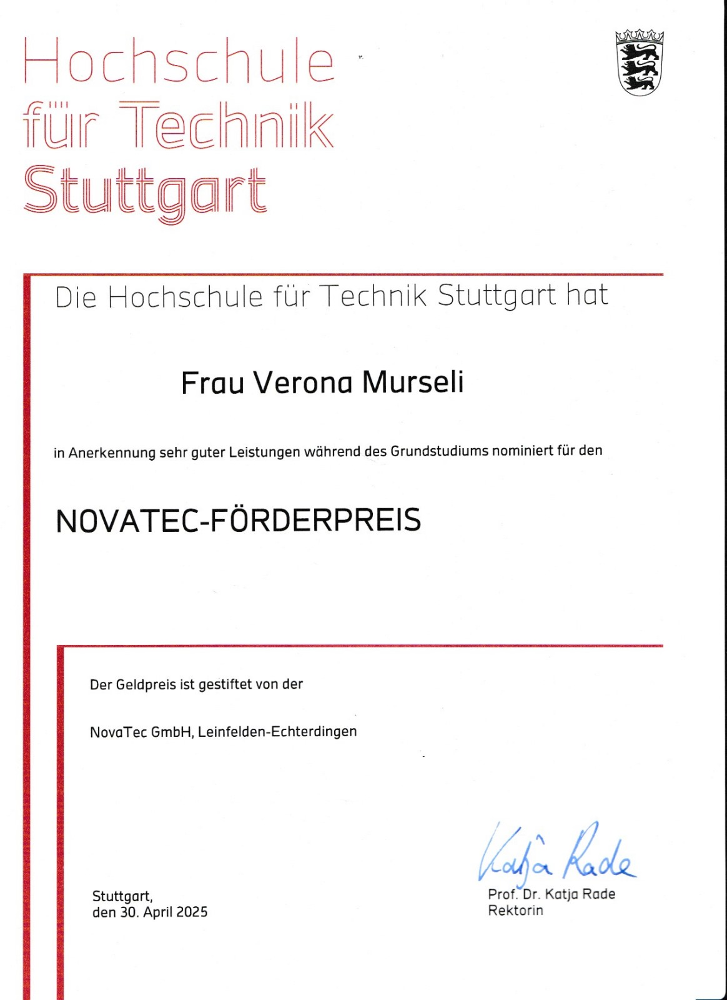

Certificates & Awards
e‑fellows.net Scholarship
Scholarship for academic excellence and networking opportunities.
See certificate

Novatec Förderpreis
Award for outstanding achievements in IT and Business Informatics.
See certificate